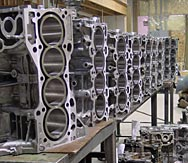

Dan Benson has been machining since 1975 and established Benson’s Machine in 1983...
Dan is recognized as the first person to ever successfully install aftermarket performance sleeves in a Honda block. This has allowed racers to put over 50 pounds of turbo boost to the Honda block without sleeve failure. He sleeves big bore blocks for all motor engines. Benson’s Machine is a full service machine shop whether it is 4 cyl, 6 cyl, or a V-8. All work is guaranteed to be done right the first time.